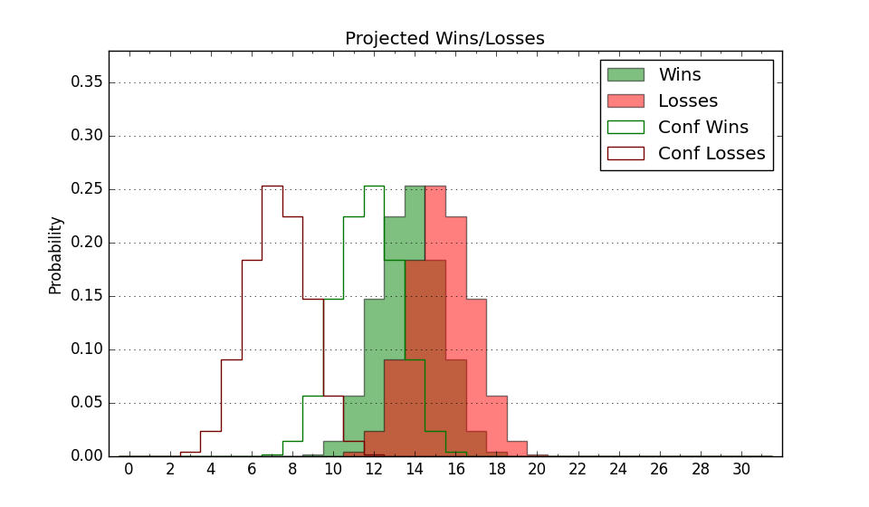

| Home | Game Probabilities | Conferences | Preseason Predictions | Odds Charts | NCAA Tournament |
| City: | Montgomery, Alabama | |
| Conference: | Southwest (4th)
| |
| Record: | 5-3 (Conf) 7-11 (Overall) | |
| Ratings: | Comp.: -12.0 (295th) Net: -11.5 (291st) Off: 91.3 (343rd) Def: 102.9 (136th) SoR: 0.0 (166th) |
| Remaining | ||||||
|---|---|---|---|---|---|---|
| Date | Opponent | Win Prob | Pred. | |||
| 2/5 | Florida A&M (341) | 80.1% | W 72-62 | |||
| 2/10 | @ Grambling St. (321) | 44.3% | L 61-62 | |||
| 2/12 | @ Southern (241) | 23.4% | L 62-70 | |||
| 2/17 | Arkansas Pine Bluff (326) | 73.9% | W 80-73 | |||
| 2/19 | Mississippi Valley St. (362) | 95.2% | W 71-52 | |||
| 2/24 | @ Florida A&M (341) | 54.2% | W 68-66 | |||
| 2/26 | @ Bethune Cookman (317) | 43.0% | L 68-70 | |||
| 3/2 | @ Alabama A&M (344) | 57.4% | W 70-68 | |||
| 3/7 | Grambling St. (321) | 73.0% | W 65-58 | |||
| 3/9 | Southern (241) | 51.0% | W 66-65 | |||
| 3/9 | Grambling St. (321) | 73.0% | W 65-58 | |||
| Previous | Game Score | |||||
| Date | Opponent | Win Prob | Result | Off | Def | Net |
| 11/6 | @Mississippi (73) | 4.9% | L 59-69 | -7.4 | 25.0 | 17.6 |
| 11/10 | @Iowa (52) | 3.5% | L 67-98 | 2.2 | -9.6 | -7.3 |
| 11/17 | @Memphis (75) | 5.1% | L 75-92 | 11.6 | -7.4 | 4.2 |
| 11/22 | @Samford (97) | 6.6% | L 67-99 | 0.6 | -17.1 | -16.4 |
| 11/24 | (N) North Carolina A&T (336) | 64.5% | W 88-73 | 23.2 | -4.5 | 18.7 |
| 11/25 | (N) Merrimack (182) | 27.3% | W 66-60 | 0.7 | 15.0 | 15.7 |
| 12/13 | @LSU (80) | 5.4% | L 56-74 | 1.2 | -0.0 | 1.2 |
| 12/19 | USC (78) | 15.6% | L 59-79 | -12.9 | -4.1 | -17.0 |
| 12/22 | @Auburn (8) | 1.0% | L 62-82 | 7.8 | 11.8 | 19.6 |
| 12/29 | @South Florida (112) | 8.3% | L 70-73 | 22.2 | -7.9 | 14.3 |
| 1/6 | @Mississippi Valley St. (362) | 85.2% | W 54-51 | -16.1 | -1.7 | -17.8 |
| 1/8 | @Arkansas Pine Bluff (326) | 45.4% | W 83-72 | -1.5 | 15.2 | 13.8 |
| 1/11 | Jackson St. (284) | 61.1% | L 63-73 | -15.9 | -9.2 | -25.1 |
| 1/13 | Alcorn St. (307) | 68.0% | W 55-53 | -18.6 | 15.1 | -3.5 |
| 1/15 | (N) Alabama A&M (344) | 71.3% | W 72-55 | 9.4 | 6.9 | 16.4 |
| 1/27 | @Prairie View A&M (300) | 36.0% | W 74-67 | 8.7 | -2.4 | 6.3 |
| 1/29 | @Texas Southern (290) | 33.2% | L 55-56 | -1.8 | 3.5 | 1.6 |
| 2/3 | Bethune Cookman (317) | 72.0% | L 68-79 | -10.8 | -14.1 | -24.9 |
| Stats & Trends | |||||
|---|---|---|---|---|---|
| Current | Day | Week | Month | Season | |
| Composite | -12.0 | +0.0 | -1.1 | -0.7 | +5.2 |
| Comp Rank | 295 | -- | -9 | -8 | +53 |
| Net Efficiency | -11.5 | +0.0 | -1.5 | -2.5 | -- |
| Net Rank | 291 | -- | -9 | -26 | -- |
| Off Efficiency | 91.3 | +0.0 | -0.8 | -3.5 | -- |
| Off Rank | 343 | -- | -3 | -39 | -- |
| Def Efficiency | 102.9 | -0.0 | -0.7 | +1.0 | -- |
| Def Rank | 136 | +1 | -1 | +51 | -- |
| SoS Rank | 179 | -- | -44 | -171 | -- |
| Exp. Wins | 13.7 | +0.0 | -1.8 | -1.1 | +3.7 |
| Exp. Conf Wins | 11.7 | +0.0 | -1.8 | -1.1 | +3.1 |
| Conf Champ Prob | 14.0 | +0.4 | -12.4 | +1.5 | +10.1 |

| Advanced Stats | ||
|---|---|---|
| Stat | Value | Rank |
| Off Eff FG % | 0.408 | 359 |
| Off Ast Ratio | 0.101 | 357 |
| Off ORB% | 0.249 | 265 |
| Off TO Rate | 0.125 | 40 |
| Off FT Ratio | 0.260 | 332 |
| Def Eff FG % | 0.511 | 200 |
| Def Ast Ratio | 0.144 | 190 |
| Def ORB% | 0.274 | 168 |
| Def TO Rate | 0.171 | 48 |
| Def FT Ratio | 0.416 | 323 |